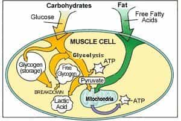

Cardio sucks, but it’s undoubtedly vital to do to give yourself a truly high level of fitness. As a side note, I’ve never really felt that circuit weight training provided an effective resistance workout OR cardiovascular workout—but I don’t particularly enjoy monotonously plodding along for 30 or 45 minutes, or even an hour at a time, and I think most men don’t either (regardless of whether or not you believe the “liberals run, conservatives lift” dichotomy).
And then there’s doing stationary cardio such as ellipticals, treadmills, bikes, and the like. I personally find these to be even more soul crushing than standard cardio: they take all of the “fun” of locomotory cardio, but with the added sense of being a gerbil running on a wheel.
So what do you do if you have better things to be doing? As I’ve mentioned in the past, I have until very recently been recovering from a severely dislocated foot, and while forced to use cardio machines, I came across the solution: a fast, extremely intensive cardio training method that will leave you gassed in no more than twenty minutes: Tabata Interval Training.
What?
Tabata Interval Training is named after Dr. Izumi Tabata, sports medicine doctor most famously affiliated with the Japanese Olympic Speed Skating team. He designed a program of intensive interval training for his skaters, alternating between sprints and slow jog/rest periods in equal 30 second intervals to provide a brutal cardiovascular workout that quickly forces the trainee to reach VO2Max (maximum oxygen consumption capacity, aka the closest measure of cardiovascular exertion there is), and exhausts the glycogen stores of the muscles in no more than 20 minutes.
And I emphasize 20 minutes max: simply put, if you are not pouring sweat and utterly exhausted by that point in time, you’re doing it wrong, and need to increase the intensity of your exercise program. I myself can’t even do 20 minutes, I can only do around 13 minutes of this delightfully hellish regimen.

What Tabata Intervals Do For You
The trainee doing Tabata intervals will immediately notice results with this cardio program—most notably vastly increased cardio capacity in all respects—which is to say both in sprinting and moderate intensity sustained cardio. When I started doing this program, I couldn’t even break 10 minutes of intervals, and now that I’ve reached 13 minutes I’ve noticed that my stamina in jogging, swimming, and other sustained cardio activities is much greater than it was before.
Another immediately noticeable benefit to interval training is weight loss—the trainee will notice rapid weight loss alongside their increased endurance capacity. In fact, studies show that it is every bit as effective as regular cardio for increasing endurance and losing weight, but in a fraction of the time.
And lastly, forcing yourself to do just one more 30 second sprint will do wonders for your mental and/or willpower training.

How To Do It
So now you probably want to know how to do these intervals. And luckily, it’s pretty simple—all you need is a timer and some sort of cardio method. Any will do, as long as it is entirely based on your own muscular power. Running, jump rope, swimming, skating, elliptical machines, bicycling, stationary bikes, etc. I specify “your own muscular power” as a way to differentiate it from, say, a treadmill, which moves via programming the machine to go at a certain speed. You can’t do Tabatas on a treadmill, as the treadmill does not quickly and/or seamlessly change speeds.
Warm up a bit and then set the timer for 30 seconds. Do a slow, easy jogging pace until the 30 seconds are up. Then immediately start a sprint, emphasis necessary. Sprint as hard and as fast as you can. Sprint like your life was depending on it!
Maintain this sprinting pace for 30 seconds as well, and then repeat the cycle anew until you can’t anymore. If you can somehow set your timer to beep every 30 seconds, even better.
I must reiterate, you will not last for more than 20 minutes, and for your first time you likely won’t even make 10.
Even though I am now recovered, I still do Tabata intervals because I find that no other form of cardio exercise hits that trifecta of effectiveness, efficiency, and not being an endless slog. And if I, somebody who hates cardio enthusiastically does Tabata interval training, I don’t see what reason you have to not be doing this as well.
Read More: 5 Reasons Men Should Limit Their Cardio